FPGA Development Primer
Before jumping into Lab 1, it's important to understand the tools we'll be working with. All lab assignments will include an FPGA component, where you'll emulate your design. FPGAs (short for Field Programmable Gate Arrays) are a special type of hardware that can be configured to represent any digital logic function. When we configure an FPGA to represent a specific piece of hardware, the FPGA is emulating our design, and will perform the same logic functions. Because of this, FPGAs are used extensively for early prototyping of designs; since they are actual hardware, they can run much faster than simulations and without forcing a designer to fabricate their design. In this primer, we'll become familiar with using FPGAs by emulating a design from lecture.
1. Setting up a Quartus Project
FPGAs often come with development environments. These environments are large pieces of software that help get your design from a hardware description language to something that can be configured on the FPGA. This includes:
- Determining what resources are needed to represent your design (known as synthesis). An example of this would be determining that your design needs 3 AND gates and 2 OR gates.
- Placing your design - determining which FPGA resources will be used to represent your design
- Routing the different logic components together to represent your design
For this class, we will be using Quartus Prime ("Quartus") development environment. Quartus is installed on all lab machines, and will be used during the FPGA portions of lab assignments to put your design on the FPGA.
1.1. Creating a New Quartus Project
First, let's use Quartus to create our project. To start Quartus, double-click on the Quartus Prime icon on the Desktop of a lab machine:

Quartus Start-Up
You may see the following prompt when starting Quartus: 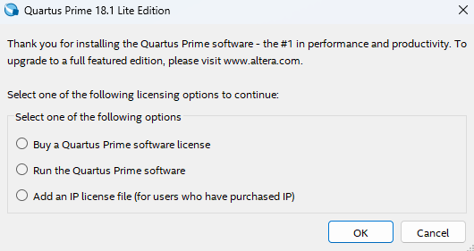 Select "Run the Quartus Prime software", then click OK. We've found that Quartus often quits the first time after this, so you may need to re-open the application.
After starting Quartus, go to File -> New Project Wizard. This will start an interactive prompt menu to help create your project. In the menu:
- Directory, Name, Top-Level Entity:
- Using the file searcher, create a new directory for your project
in your Documents. Name it
lab1-primer. Select this as the "working directory" for your project - the path should look likeC:/Users/netid/Documents/lab1-primer - Name your project
lab1-primerby typing in the appropriate field. The "top-level design entity" should be automatically filled appropriately - Click Next 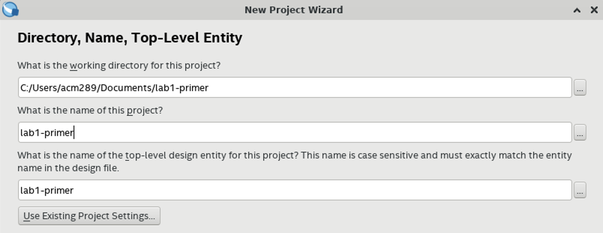
- Using the file searcher, create a new directory for your project
in your Documents. Name it
Incorrect Folder
If Quartus gives an error that it can't create the project, make sure
that you're creating the project in your Documents folder. Quartus
will give a default location of its installation folder - make sure
to change this.
- Project Type:
- Select "Empty Project
- Click Next 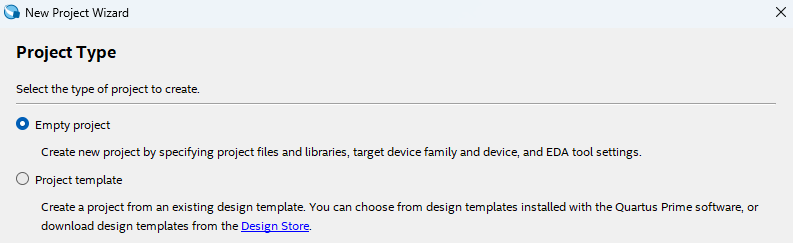
- Add Files:
- Skip this for now; we'll add our design files later
- Click Next
- Family, Device & Board Settings:
- Switch to the Board tab:
- Make sure "Family" is set to Cyclone V and "Development Kit" is set to Any
- Select DE0-CV Development Board (this is the FPGA board for the class)
- Make sure "Create top-level design file" is checked
- Click Next 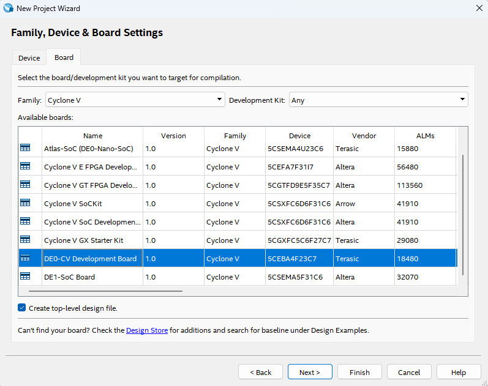
- EDA Tool Settings:
- Skip this section for now. These are extra tools that can be used to analyze your design, but we won't be using them
- Click Next
- Summary:
- Click Finish to finish creating your project
Wait for Quartus to set up your project. After that, you'll be left with a blank project to work on and configure as we wish.
1.2. The Top-Level Module
One of the hardest parts of working with FPGAs is making sure that the development environment knows how to map your design to the physical pins on the board. Luckily, Quartus was able to do this for us - when we selected "Create top-level design file", Quartus automatically created a template module, and hooked up all of the pins correctly in its configuration. This module is now the top-level module; it is the module that will actually be put on the board. If we want to create any extra logic, it must be contained within this module.
To see what this module looks like, go to the Project Navigator, and
change the entities from Hierarchy to Files. You should see a file
named DE0_CV_golden_top.v; this is the file where our top-level module
was generated. Double-click the listing to open the file in Quartus.
Missing Top-Level File
If this file is missing, you may not have selected the DE0-CV Development Board, or may not have checked "Create top-level design file" when creating your project.
The module should look very similar to Verilog modules that you've seen in lecture, although with many inputs and outputs. These represent all of the possible inputs and outputs of our FPGA hardware. We won't use all of these right now, but will instead focus on two signals in particular:
SW: The physical switches on the board. These are a logical1or0depending on whether the switch is up or down, respectively. These are coming into our FPGA hardware, and are therefore inputs to the top-level module.LEDR: The (red) LEDs on the board. These are "on" or "off" depending on whether our logic sets them to a1or0, respectively. These are going out of our FPGA hardware, and are therefore outputs of the top-level module.
These signals are arrays; they represent a collection of multiple wires. You can access an individual signal using the bracket notation, similar to many programming languages. For example, if you wanted to set the 0th LED (the first one in the array, starting at 0) to the logical AND of the 0th and 1st switches, you might write
Let's make a module so that we can perform logic with our switch and LED signals!
2. Integrating a Hardware Design into Quartus
In this section, we'll add logic corresponding to the following gate-level network:

Code Re-Use
This gate-level network should look familiar; we used this in Section 2. Feel free to re-use your code from then; if you haven't already, make sure to try out the Boolean Equations, as we'll be using them in Lab 1 and beyond.
To add our own logic, we'll create a new module, and instantiate it within our top-level module. It's good practice to have only one module in a file (with the filename being the same as the name of the module it contains), so let's first add a new file to our project
2.1. Implementing Hardware Directly within Quartus
To create a new file within your Quartus project:
- Go to File -> New
- Click on Verilog HDL File, then select OK
- You should now see a blank Verilog file. Go to File -> Save As, and
save this file as
PairTripleDetector_GL.vwithin yourlab1-primerdirectory
We now have a new Verilog file that's included as part of our design - from here, we can add or new logic inside of it
Existing Files
For this primer, we'll be creating and editing our design files
directly within Quartus. However, this won't be the case for the
labs, where you will be downloading and using the design you've
already simulated/tested on ecelinux. Later on, when you wish to add
files that already exist, you can do so by going to
Project -> Add/Remove Files in Project
When we add new blocks of logic, we want to add them as modules. This involves first creating the module, and then instantiating it wherever we want that logic.
First, let's define our module. In PairTripleDetector_GL.v, define a module
named PairTripleDetector_GL that represents the gate-level network above,
exactly as done in section.
module PairTripleDetector_GL
(
input wire in0,
input wire in1,
input wire in2,
output wire out
);
...
endmodule
Make sure that it has three inputs (in0, in1, and in2), and one
output (out). Make sure that it contains the logic to implement the
gate-level network above. Lastly, make sure to save the file when
you're done (File -> Save)
2.2. Connecting to the Top-Level Module
From here, we can instantiate this module - create an instance of the
hardware it represents. In your DE0_CV_golden_top.v (which contains
the top-level DE0_CV_golden_top module), if you scroll to the bottom,
you'll notice the module doesn't contain any
logic yet. Let's add some functionality by instantiating our
PairTripleDetector_GL module within the DE0_CV_golden_top module - let's
give it the name detector.
The module should have the following connections:
in0should be connected to the 0th switch (SW[0])in1should be connected to the 1st switch (SW[1])in2should be connected to the 2nd switch (SW[2])outshould be connected to the 0th LED (LEDR[0])
Once you're done, your top-level module should look like the following:
module DE0_CV_golden_top (
...
);
PairTripleDetector_GL detector (
.in0 (SW[0]),
.in1 (SW[1]),
.in2 (SW[2]),
.out (LEDR[0])
);
endmodule
Make sure to save this file as well.
2.3. Adding Timing Information
In addition to the above, we need to give Quartus information about our timing constraints, so that it can properly analyze the timing of our design and analyze the critical path.
- Similar to before, go to File -> New to create a new file. This time, select "Synopsys Design Constraints File"
- Inside the file, add the following Tcl commands:
set_time_format -unit ns -decimal_places 3
create_clock -period 20 [get_ports {CLOCK_50}]
set_input_delay -add_delay -clock { CLOCK_50 } -max 0 [get_ports SW*]
set_input_delay -add_delay -clock { CLOCK_50 } -min 0 [get_ports SW*]
set_output_delay -add_delay -clock { CLOCK_50 } -max 0 [get_ports LEDR*]
set_output_delay -add_delay -clock { CLOCK_50 } -min 0 [get_ports LEDR*]
Timing Commands
We won't delve into these commands too much, but at a high-level, we're telling Quartus to not factor in delay from these ports, so out timing results should only represent the delay in our design. We also tell Quartus to analyze our timing for a "clock period" of 20 nanoseconds. We'll learn much more about clocks when we cover sequential logic, but for right now, you can think of this as saying that our logic paths should take no longer than 20 nanoseconds.
- Go to File -> Save As, and save this file as
timing.sdcwithin yourlab1-primerdirectory
With the timing information and our design logic, we should be good to start putting our design on the FPGA!
3. Synthesizing a Hardware Design using Quartus
From here, we can "synthesize" our design for the FPGA. The "synthesis" step includes:
- synthesis (determining what resources we need for our design)
- placement (determining which FPGA resources will be used)
- routing (connecting the FPGA resources as appropriate)
At the end, we'll be left with a synthesized version that can be immediately put on the FPGA - this is known as a bitstream.
In Quartus, you can perform the synthesis step by going to Processing -> Start Compilation, or clicking the blue "play" button in the top toolbar. This will start the synthesis step - here, the FPGA is using many complicated tools, so the entire process may take a few minutes. You can keep track of the progress in the Tasks bar on the left-hand side, as well as with the verbose output log in the bottom. If you made any static errors (such as incorrect syntax, or mixing up inputs and outputs), this is where Quartus will let you know with an errors. However, it can't check for dynamic behavior (errors in the logic of your design), as it doesn't know the correct logic - that's up to you as a designer.
If you get no errors, after a few minutes, you should see the following output in the log produced at the bottom of Quartus:
4. Analyzing a Hardware Design using Quartus
Once we've synthesized our design, Quartus will also give us some reports about our design. These are CRITICAL for us as designers to understand the tradeoffs between our different designs, and can help us analyze which one might be "better" in different circumstances.
4.1. RTL Viewer
First, Quartus can help us visualize what logic our RTL design maps to. Go to Tools -> Netlist Viewers -> RTL Viewer. This should open up a new window to view how Quartus implemented our design.
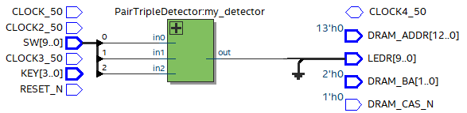
We can see that our RTL design takes in some of the switches as inputs, and outputs to an LED.
Our modules are initially represented as boxes (abstracting away the internal logic), but we can also click the "+" to open up the design and see the underlying gate-level network that Quartus mapped our design to. Compare this gate-level network to the one above - they should be the same!
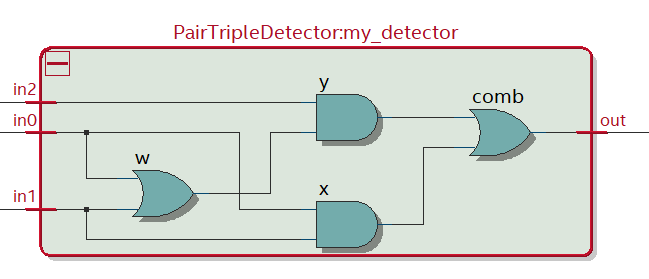
When you're finished, you can close this pop-up window.
4.2. Technology Map Viewer
The RTL Viewer showed us the gate-level network, but what if we want to visualize exactly which resources were used on the FPGA? The Technology Map Viewer can help us with this.
- Go to Tools -> Netlist Viewers -> Technology Map Viewer (Post-Fitting). This should open up a pop-up window that shows our entire design that came with our template top-level module.
- To focus on our design:
- Click the "+" at the top to open up a new tab.
- In the "Netlist Navigator" panel on the left-hand side, under DE0_CV_golden_top -> Instances, drag the instance of PairTripleDetector_GL to the new tab
- Click the "+" on the module instance to show the underlying FPGA resources
You should see only one block that makes up the logic. This is known as a "LUT" (Look-Up Table), but we'll reference this as a reconfigurable truth table. When we configure our FPGA, we tell this table what outputs it should have for every input, to represent our design. This design is relatively simple, so it only needs one truth table, but later designs will require more due to increasing complexity.
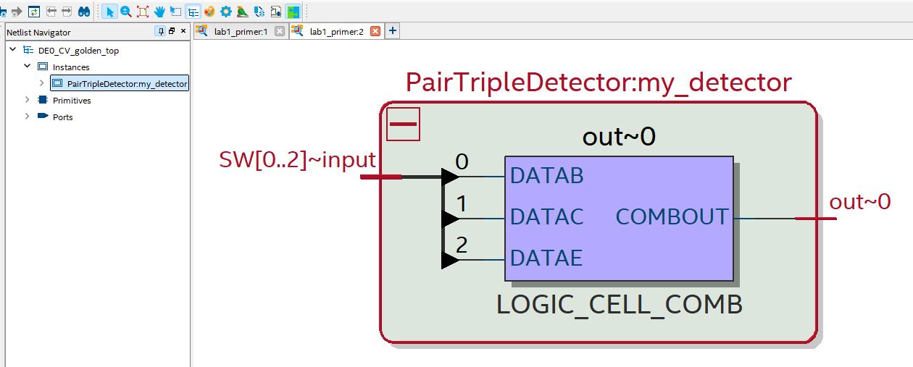
When you're finished, you can close this pop-up window.
4.3. Chip Planner
Next, let's see if we can visualize exactly which portions of the FPGA are being used! Navigate to Tools -> Chip Planner to open up the Chip Planner window.
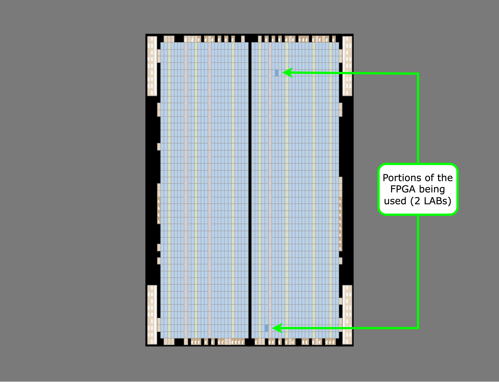
This helps us visualize exactly which portions of the chip are being utilized - the highlighted portions are being used for our design. Our design isn't too large, so very few resources are being used. Quartus also has different granularities for how much logic is being used - each of these rectangles is a "LAB" (Logic Array Block)
We can also see what each of these LABs are doing. The upper LAB
was a ground signal that Quartus created, but the other LAB was the
reconfigurable truth table that Quartus used to implement our design.
Zoom on on this block (View -> Zoom In, or Ctrl + Space), and click
on the highlighted portion within it. The smaller highlighted portion
is an "ALM" (Adaptive Logic Module) - each LAB contains multiple ALMs.
Each ALM contains multiple reconfigurable truth tables - you can start
to get a sense of how much logic our FPGA can represent!
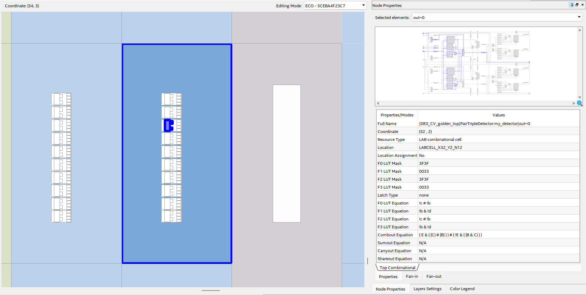
On the side, you should be able to see what the ALM is used for
(indicated in the name), as well as the Boolean logic equation that it
implements. In this case, our ALM is determining what the out port of
our detector module should be.
When you're finished, you can close this pop-up window.
4.4. Area Reports
Quartus also generates reports for us to gain numerical results for our design. The first one we'll look at is the area report - we want to know how many resources our design needs. For this class, we'll approximate a design's area by how many FPGA resources it uses.
Navigate to Processing -> Compilation Report. In the tab that opens up, under Fitter -> Resource Section, click on Resource Usage Summary. This will open up a report that shows you how many resources are being used on the FPGA. Here, we can see that 1 ALM is needed for our logic, and 2 LABs are used for logic, matching what we saw in the Chip Planner. While we could tell our utilization from the Chip Planner in this case, this report will be much more useful later on when our designs become more complicated and use more resources.
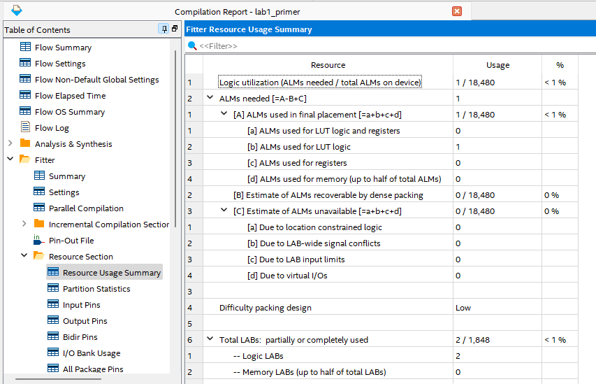
4.5. Timing Reports
Lastly, we can view the timing associated with our design. This can help tell us how long each path takes. In lecture, we represented this as an abstract timing unit tau, but now that we have an actual design, we can represent our path times in nanoseconds.
- Navitage to Tools -> Timing Analyzer. This will open up a pop-up window for analyzing the timing of our design.
- Under the Tasks panel on the left-hand side:
- Double-click "Update Timing Netlist" to update the netlist for our design
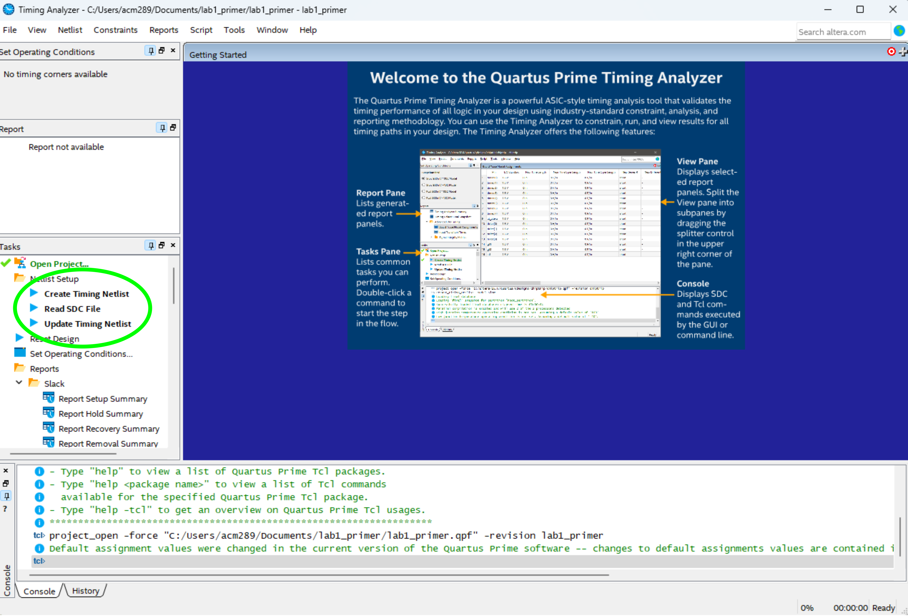
- Navigate to Reports -> Custom Reports -> Report Timing to create a
timing report. This will open up a pop-up for us to tell Quartus what
paths to analyze:
- In Targets, under "From", put
[get_keepers SW*]. This tells Quartus to analyze paths starting from our switch signals - In Targets, under "To", put
[get_keepers LEDR*]. This tells Quartus to analyze paths ending at our LED signals - In Paths, under "Report number of paths", put
100- this is the number of paths that Quartus will report - Click Report Timing
- In Targets, under "From", put
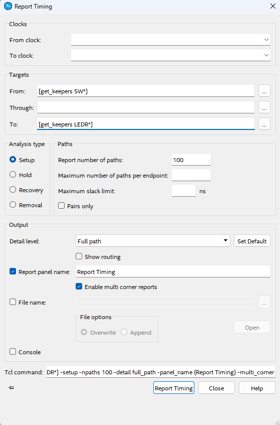
This will generate a timing report for our design:
- In the top-panel, you should see three paths that Quartus found. They should each start at one of the switches, and end at our LED signal. Note that the "Data Delay" is how long each path takes - the path with the longest delay is the critical path. Right now, the delay may be longer than needed because we told the tools that logic can take up to 20 nanoseconds. If we wanted to be more representative, we'd push the tools to fit the logic in less time. We'll explore this more in Lab 1.
No Paths
If Quartus didn't find any paths, it's likely that you may have
missed something in the pop-up window, or in your timing.sdc file.
Make sure to go back and double-check them!
- Click on the critical path, then look at the Data Arrival Path panel.
This panel shows how long it takes in nanoseconds for the signal to
reach each portion of the logic:
- The Total and Incr columns show the total and incremental delay for each portion of the path
- The Location column shows what type of FPGA resource the signal is going through
- The Element column shows what signal name corresponds to the FPGA
resource. Some of these may be generated by Quartus, but you should
still be able to see the switch signal, LED signal, and the logic
inside your
detectormodule
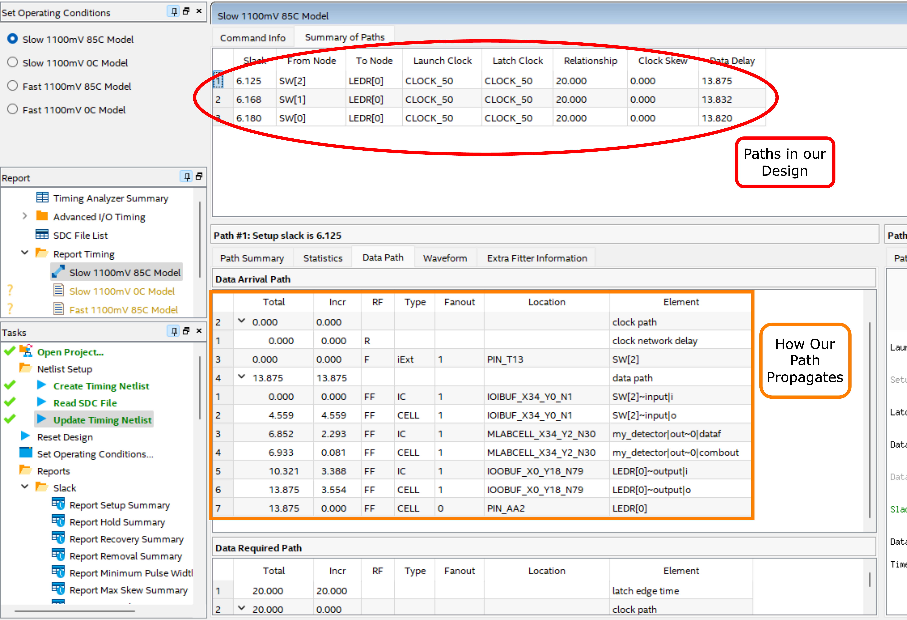
When you're finished, you can close this pop-up window.
5. Configuring a Hardware Design onto the FPGA
With our design synthesized, all that's left is to configure our FPGA for our design. First, make sure your FPGA is turned on and plugged into the workstation via the USB Blaster.

Go to Tools -> Programmer. This should open a new window for configuring the FPGA:
- Click on Hardware Setup. Under "Currently selected hardware", you should see your FPGA as an option (appearing as USB Blaster [USB-0]). Select your FPGA, then click Close
- Click on Start. This should configure the FPGA - notice how this is a lot quicker than the synthesis step. Quartus has already done the difficult part of figuring out how the FPGA should represent our design, so all this step needs to do is communicate that information to the FPGA. You can check when it's done by looking at the "Progress" bar in the top-right.
Once that's done, your FPGA should now emulate your design! You should verify this; try all possible switch combinations, and create the truth table that they represent. Does this match what you expect?